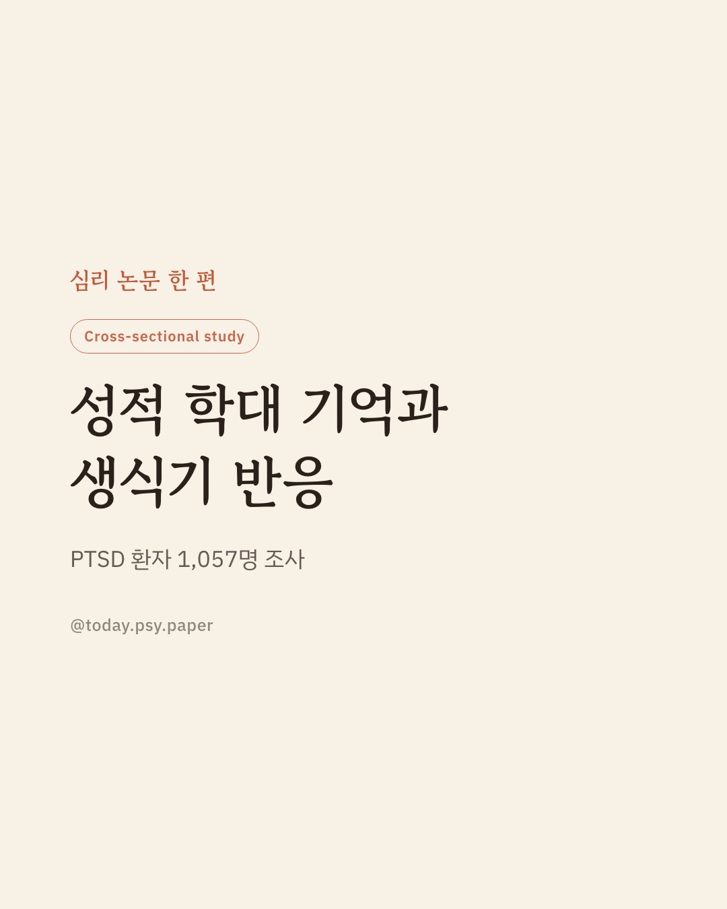
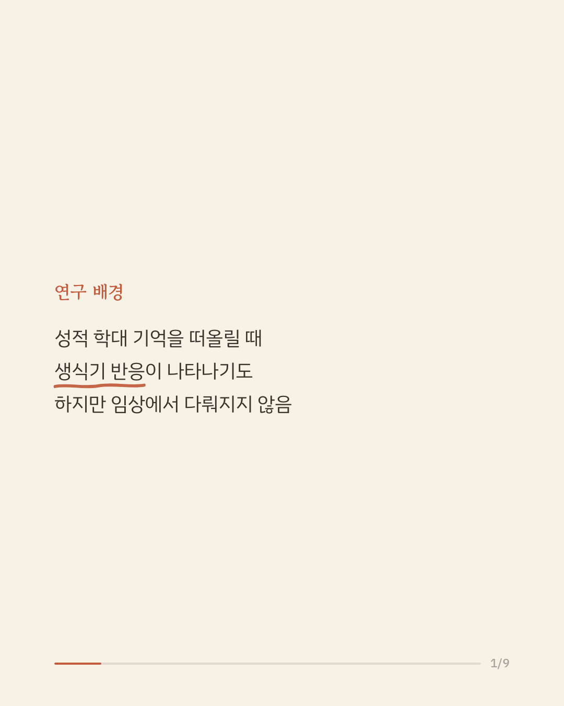
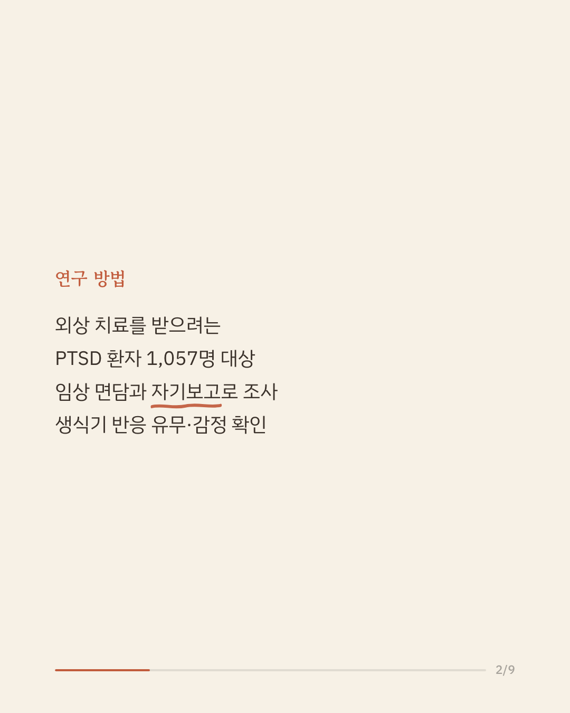
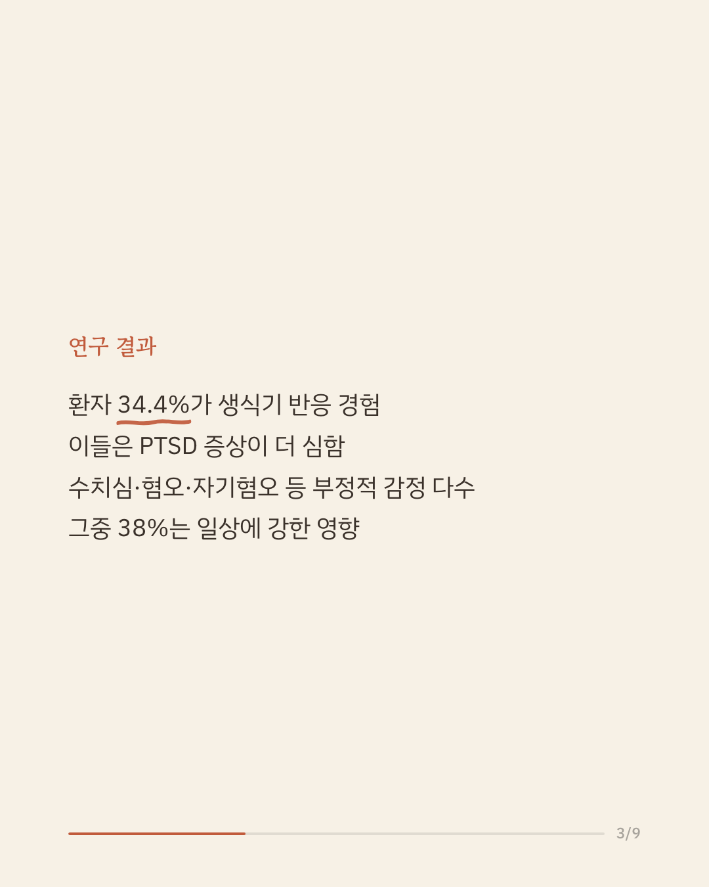
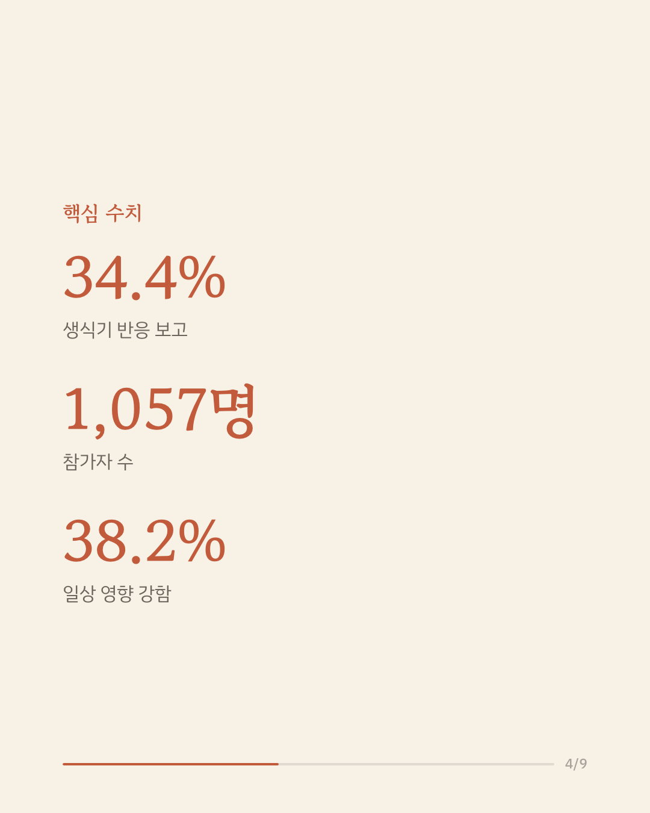
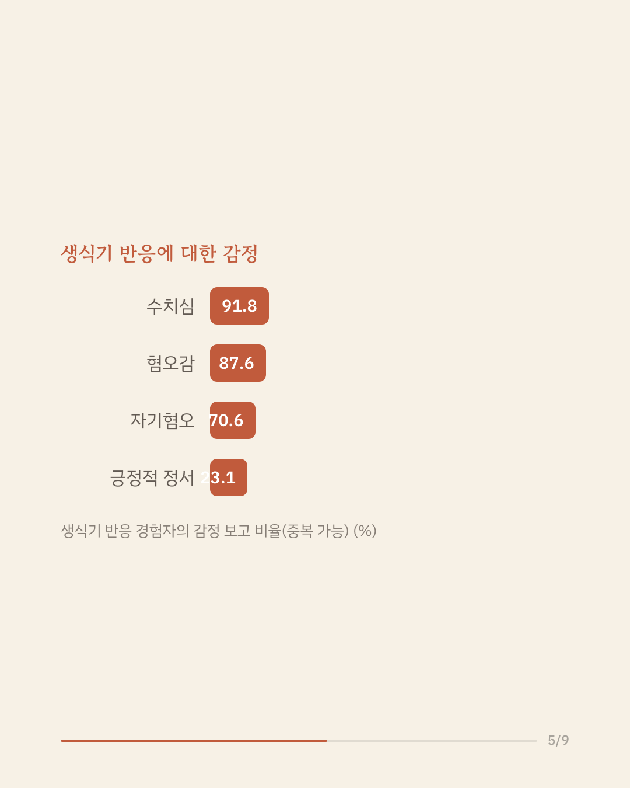
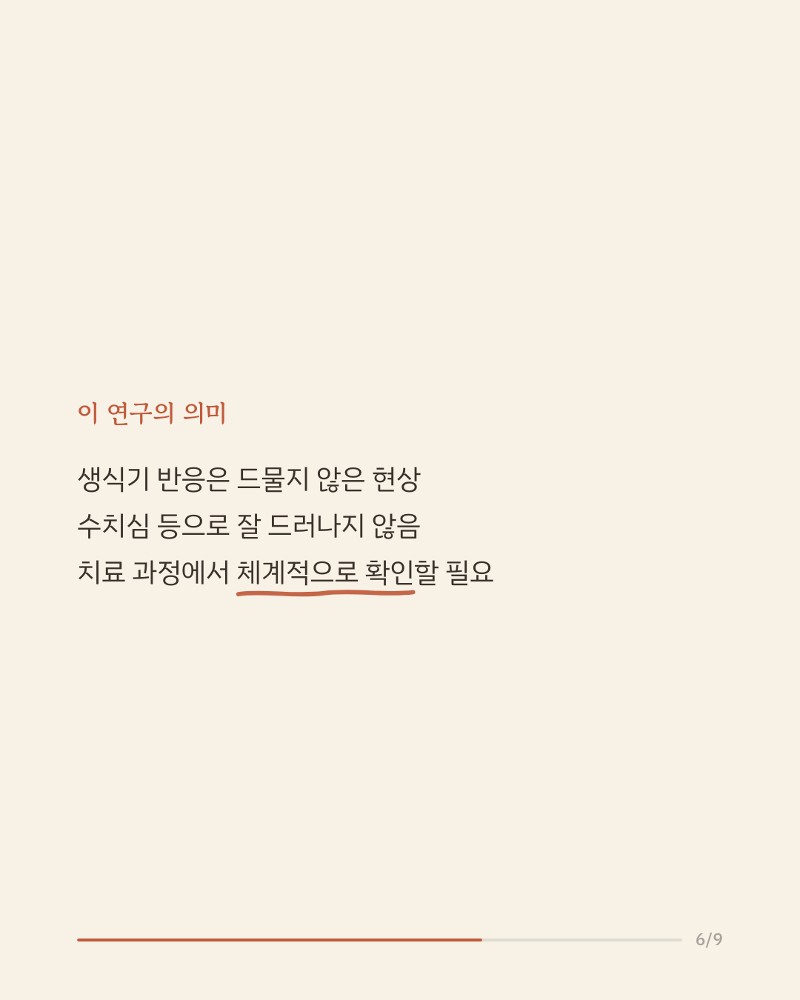
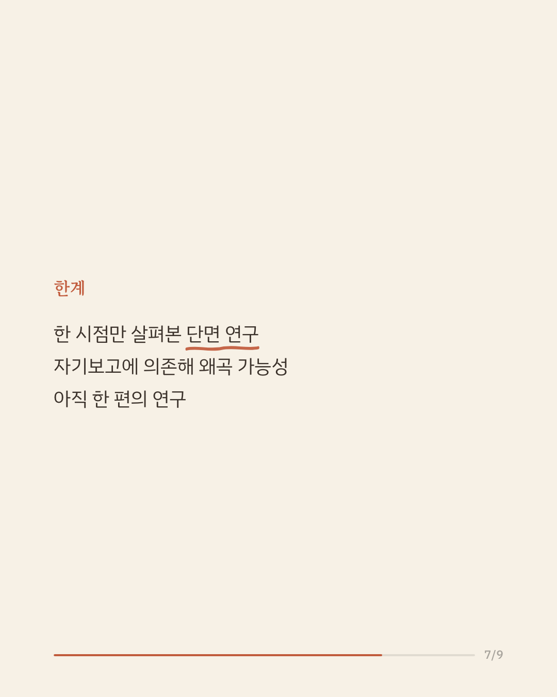
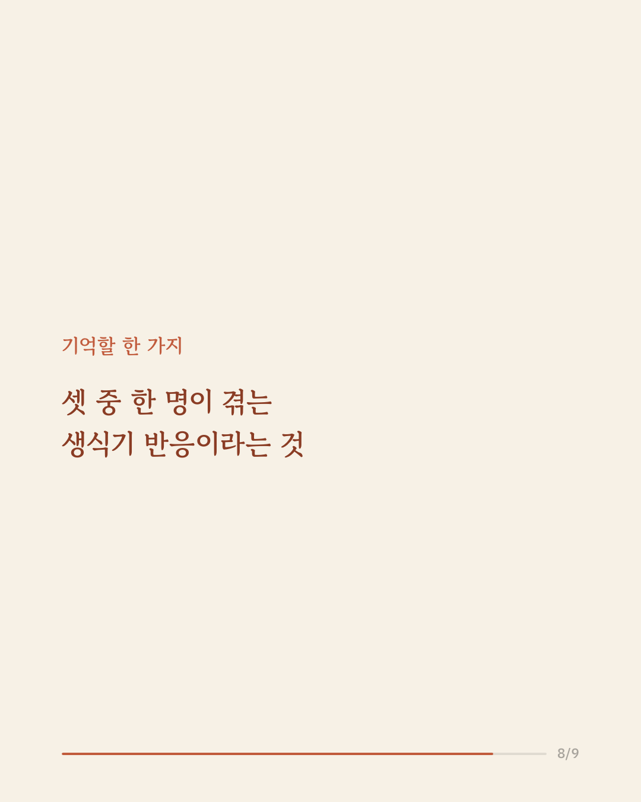
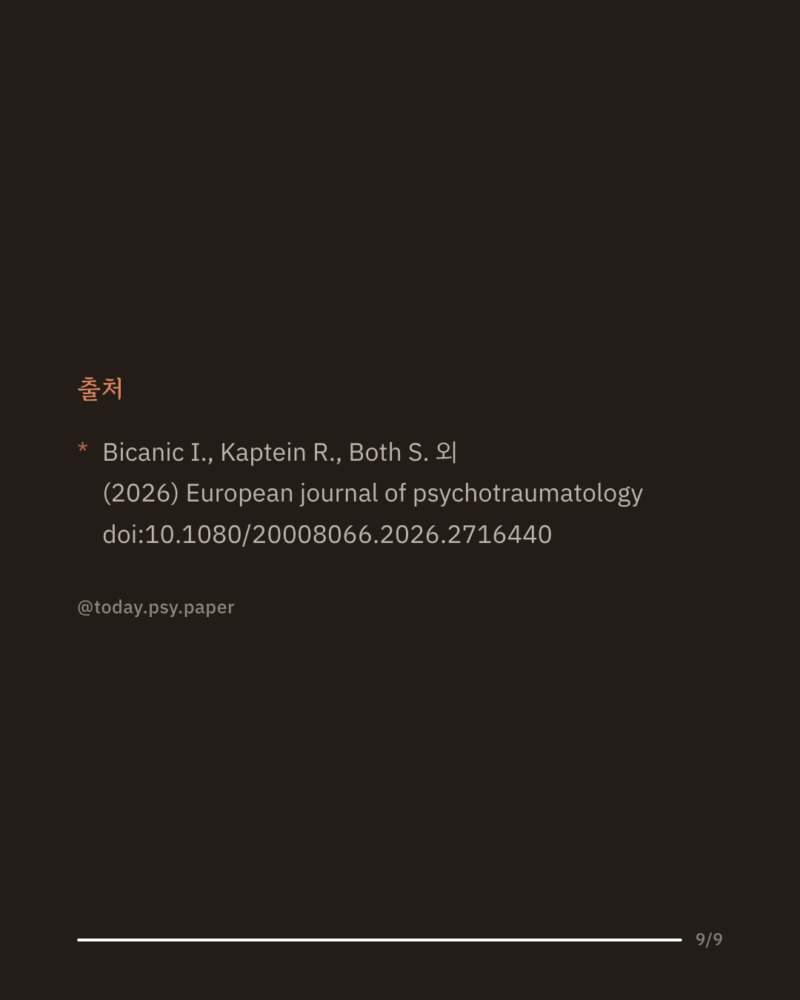

성폭력 피해를 겪은 후 외상 후 스트레스 장애(PTSD)를 진단받으면, 치료 과정에서 트라우마 기억을 다시 떠올리게 됩니다. 이때 일부 환자는 학대 당시와 비슷한 신체 반응, 특히 생식기 반응을 함께 경험한다고 보고합니다. 이번 연구는 이런 반응이 얼마나 흔한지, 그리고 어떤 감정과 함께 나타나는지를 대규모로 조사했습니다. 성폭력 이력이 있는 PTSD 환자 1,057명 중 34.4%가 트라우마 기억과 관련한 생식기 반응을 보고했습니다. 이들은 그렇지 않은 환자보다 PTSD 증상이 더 심각했고, 학대 당시 나이가 더 어렸으며, 학대를 반복해서 겪은 경우가 많았습니다. 반응을 경험한 이들 대부분은 수치심(91.8%), 혐오감(87.6%), 자기혐오(70.6%) 같은 부정적 감정을 함께 느꼈고, 이 중 혐오감과 자기혐오는 PTSD 증상 심각도와 관련이 있었습니다. 이 결과는 생식기 반응이 드문 일이 아니며, 치료 계획에서 체계적으로 다뤄질 필요가 있음을 보여줍니다. 다만 한 시점에서 자기보고로 조사한 단면 연구인 만큼 인과관계를 단정하기는 어렵습니다. 단일 연구이므로 확대 해석은 조심해야 합니다. 출처: European Journal of Psychotraumatology (2026), 'Prevalence and emotional valence of genital responses related to sexual abuse memories in patients with PTSD' #외상후스트레스장애 #트라우마치료 #임상심리학 #정신건강연구 #성폭력피해자지원
python3 publish.py 42704048